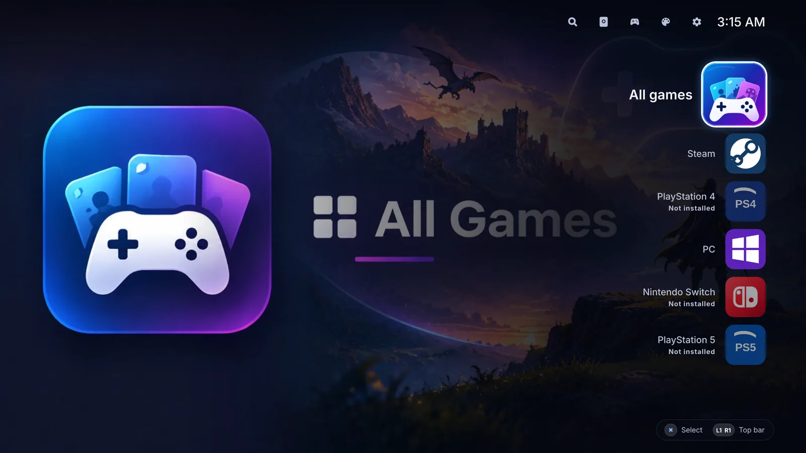

One library
Games from emulators, PC folders and Steam, in one place.
Free software · Linux, macOS, Windows
Marah Launcher is a game launcher for a TV and a controller. It puts your games from emulators, PC folders and Steam in one library, and you play them from the couch.


Games from emulators, PC folders and Steam, in one place.
Every screen works with a pad. A keyboard and a mouse work too.
The screens are Slint themes. A theme changes the whole layout.
GPL-3.0-or-later. Read the code, change it, share it.
Get it
An app for the computer you have, or a whole PC that starts into your games.
An app for Linux, macOS and Windows. Your desktop stays as it is.
curl -fsSL https://github.com/MarahHQ/marah-launcher/releases/latest/download/marah-launcher-linux-x86_64.tar.gz | tar xz && ./marah-launcher-linux-x86_64/install.sh
Installs for you only, with no sudo, in ~/.local/lib/marah-launcher. install.sh --uninstall removes it.
The whole PC becomes the console. Try it from a USB stick first.
The experience
Marah Launcher finds your games and shows their art and details. It downloads and updates the emulators, installs games and starts them. When a game closes, it comes back to the front.
Made for a controller
Every screen works with a controller, a keyboard or a mouse. Try it here: plug in a controller and press a button, or click the controller and press a key.
Waiting for a button.
Themes
A theme draws every screen: the layout, the colors, the fonts and the sounds. Marah Launcher
comes with two, Default and Classic, and you can write your own: Slint files and a
theme.toml beside them. A theme is data. It runs no code.
The deb, rpm and Arch packages add a Marah Launcher session to the login screen. Pick it, and the launcher is all there is, as on a console.
Marah OS
Marah OS is a small Linux system, built on Fedora with bootc. Marah Launcher is the whole screen: turn the PC on and your games are there, with no desktop and no password to type.
The latest release
Internet, Sound and Bluetooth are in Settings → System, with the system's updates. You set them up with the controller.
The system and Marah Launcher update together, as one image, in the background. An update waits for the next start, so it never stops a game. If an update breaks something, the version before it is still in the boot menu: hold Shift or Esc as the PC starts and pick it.
Marah Launcher checks your PC too: Settings → This PC says how each console's games should run.
Installing on a whole disk erases it, so keep your games on another one. To keep another system, or to use free space, pick Choose partitions instead: Fedora's installer does the rest.
| Question | Marah Launcher | Marah OS |
|---|---|---|
| Runs on | Linux, macOS and Windows | A 64-bit PC (x86-64) |
| Your desktop and apps | Stay as they are | Gone from the disk you pick, or kept with your own partitions |
| Starts straight into your games | With the Marah Launcher session on Linux | Yes |
| Try before installing | It's an app: open it | From a USB stick |
| Updates itself | Yes | Yes, the whole system |
| You need | A 64-bit computer | A 64-bit PC and a USB stick of 4 GB |
| Get the launcher | Get Marah OS |
Ready, player one?
Download the latest Marah Launcher for your system.
The latest release
Install from a repository, and Marah Launcher updates with the rest of your system. The repositories' metadata is signed with this key.
sudo curl -fsSLo /etc/yum.repos.d/marah.repo https://marahhq.github.io/packages/rpm/marah.repo
sudo dnf install marah-launchersudo curl -fsSLo /usr/share/keyrings/marah.asc https://marahhq.github.io/packages/marah.asc
echo "deb [arch=amd64 signed-by=/usr/share/keyrings/marah.asc] https://marahhq.github.io/packages/deb stable main" |
sudo tee /etc/apt/sources.list.d/marah.list
sudo apt update && sudo apt install marah-launcherThere is no repository yet. Download the .pkg.tar.zst file from
the latest release, then install it:
sudo pacman -U ./marah-launcher-*-x86_64.pkg.tar.zstEvery file, with its SHA-256: the latest release.
Yes. It is free software under the GNU GPL, version 3 or later.
No. Marah Launcher runs on Linux, macOS and Windows. Marah OS is for a PC that starts straight into it.
Not yet. Switch and Steam games work on Linux. PS5, PS4 and PC games work on Linux, macOS and Windows.
Not yet. The emulators are young. Before you start a game, its page says how well it should run on this PC, and Settings → This PC says the same for each console.
To download the emulators, the Switch firmware, games and updates, yes. Games you have already set up start without it.
Marah Launcher checks for its own updates in Settings → Updates. With the deb, rpm or Arch package, your package manager updates it. On Marah OS, it comes with the system's update.
Open an issue for Marah Launcher or Marah OS. Say which game and which PC: it helps a lot.